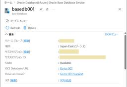
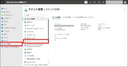
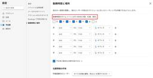

JBS Tech Blog
https://blog.jbs.co.jp/
JBS Tech Blogは、日本ビジネスシステムズ（JBS）の社員が分担して執筆を担当し、技術情報を発信しているブログです！Microsoft製品や生成AI関係の最新情報をはじめ、様々な製品やサービスの情報を幅広く公開しています。2022年3月より運用を開始し、営業日はほぼ毎日記事を公開しています。
フィード

JBS × Avanade テックブログ｜AIエージェント時代、事業部門と経営層はどう変わるべきか ── JBS・アバナード・日本マイクロソフト3社対談【Part2】
JBS Tech Blog
2026/6/17に、JBS・アバナード株式会社（アバナード）・日本マイクロソフト株式会社（MS）の三社共催にて「真の生産性革命は "制御" から始まる ― Microsoft Agent 365 が拓くコントロール可能な AI 自律化戦略 ―」セミナー（オンサイト）を開催しました。 約100人のご来場者の皆様から大変ご好評をいただいた、パネルディスカッションの内容を全3回に分けて採録し、今回は2つ目のテーマについてお届けします。 前段の記事は以下をご覧ください。 JBS × Avanade テックブログ｜AIエージェント時代、事業部門と経営層はどう変わるべきか ── JBS・アバナード・日本…
2日前

【Microsoft×生成AI連載】【やってみた】Copilot StudioエージェントでPowerPointの資料を作成してみた
JBS Tech Blog
【Microsoft×生成AI連載】久保田です。 本記事では、Microsoft Copilot Studioの新しいUIを活用してPowerPoint資料作成を支援するエージェントを作成する方法と、実際にエージェントを用いた資料作成の流れをご紹介します。 ※この記事の情報は2026/7/30時点のものです。 「Copilot Studioは難しそう」と感じている現場の業務担当者の方や、資料作成に時間がかかり苦手意識をお持ちの方にこそ、ぜひご覧いただきたい内容です。 これまでの連載 Copilot Studioの新しいUIの概要 新UIでエージェントを作成・利用してみた Copilot Stu…
2日前

Microsoft Fabric の SharePoint Online ショートカット機能とは 1
1
JBS Tech Blog
Microsoft Fabric は、データの収集・変換・分析・可視化を統合した企業向けの SaaS（Software as a Service）型プラットフォームです。 今回は、SharePoint Online（以下 SPO）に蓄積された業務データを、コピーせずにそのまま Fabric で活用できる「SharePoint Online ショートカット機能」を紹介します。 なお、本記事は Microsoft Fabric の基本的な利用経験があり、Lakehouse や Power BI を利用した分析環境に触れたことがある方を対象としています。 SharePoint Online ショート…
2日前

Oracle Database@Azure ～ Base Database を操作する 1
JBS Tech Blog
前回の記事では Oracle Database@Azure で BaseDatabase(BaseDB) を構築しました。 blog.jbs.co.jp 今回は BaseDB が稼働する環境を詳しく確認して、停止・起動、バックアップ、データベースへのアクセスといった、基本的な操作をします。 BaseDatabase 構成 サーバー情報を確認する OS情報 CPU情報 メモリ情報 ストレージ情報 ユーザー情報 DB情報 Oracle Cloud Infrastructure コンソールにアクセスする BaseDB を停止・起動する BaseDB の停止 BaseDB の起動 Base Datab…
3日前
【Copilot Studio】「行の取得」アクションのエージェントフローを活用したエージェント作成 1
JBS Tech Blog
前回は、「行の取得」アクションを使用してExcelから情報を抽出する方法を説明しました。 blog.jbs.co.jp 今回は、「行の取得」アクションを使用したエージェントフローを活用し、ユーザーからの質問にExcelから情報を抽出して回答ができるエージェントの作成手順を説明します。 「行の取得」アクションを使用したエージェントフローの作成手順は、前回の記事に記載していますので、ぜひご覧ください。 なお、本記事はCopilot Studioの基本的な構築が完了しており、これから応用的な設定や活用方法を学びたい方を想定しています。 トピック作成 生成AIのナレッジソース設定 動作確認 最後に ト…
3日前
【Microsoft×生成AI連載】【やってみた】PowerPointの「Edit with Copilot」デフォルトスキル3つを使ってみた 1
JBS Tech Blog
PowerPointの「Edit with Copilot」に用意された3つのデフォルトスキル（このプレゼンテーションのレビュー・このスライドの視覚化・質問に備える）を実際に使い、操作の流れや所要時間、注意点を紹介します。
4日前
Microsoft IntuneでWindowsの既定のアプリを設定する方法 1
JBS Tech Blog
Windows端末において、ブラウザやPDFなどの既定のアプリ設定を統一したい場面は多くあります。しかし、ユーザー操作に任せる運用では設定のばらつきが発生しやすく、管理の負担となります。 本記事では、Microsoft Intune（以降、Intune）のポリシー（既定の関連付け構成）を利用し、既定のアプリ設定を一括で制御する方法について解説します。 XMLファイルの用意 Intuneの設定 終わりに XMLファイルの用意 Intuneでポリシーを作成する前に、既定のアプリをXMLとしてエクスポートし、必要に応じて編集したうえでBase64形式にエンコードします。（Base64エンコード値は、…
4日前

【Microsoft Intune】IntuneのRBACを活用した委託先管理者への権限委譲 1
JBS Tech Blog
Microsoft Intuneでは、ロールベースのアクセス制御（RBAC：Role-Based Access Control）を利用することで、管理者ごとに実施可能な操作や管理対象を細かく制御できます。 RBACを活用することで、外部のスマートフォン運用ベンダーやヘルプデスク事業者へ管理業務の一部を委託する場合でも、必要最小限の権限のみを付与する運用が可能です。 本記事では、外部委託先に対してデバイスのワイプやリモートロックなどの運用業務のみを許可し、設定変更権限は与えない構成を例として、Intune RBACの概要とカスタムロールを利用した権限制御方法についてご紹介します。 想定される利用…
5日前
Power AppsからPower AutomateへJSON形式でデータを送信する方法＃１ 1
JBS Tech Blog
Power AppsからPower Automateへデータを引き渡す方法の1つに、JSON形式での引き渡しがあります。 JSONを使用すると、各プロパティを動的コンテンツで扱えるようになります。また、配列処理やパラメーターを追加・削除した際の修正が容易になるというメリットもあります。 本記事では、Power Appsのフォームに入力したデータを、JSON形式でPower Automateに連携し解析する方法について記載します。 なお、本記事では、添付ファイルが無い場合の方法について記載します。添付ファイルがある場合の引き渡し方法については、別の記事でご紹介予定です。 ※本記事はPower P…
5日前

Intune MAMにおけるDataBackupDisabled設定時の挙動と確認手順まとめ 1
JBS Tech Blog
Microsoft Intune のアプリ保護ポリシーでは、「iTunes や iCloud のバックアップに組織データを含めない」設定を構成できます。 この設定は、アプリ保護ログ上では「DataBackupDisabled」という値で管理されており、情報漏洩対策として重要な役割を果たします。 しかし、iTunesアカウントの用意や初期化可能なiPhoneの用意が難しく、実際の挙動を確認することが難しい場合もあります。 このような場合は、アプリ保護ログの値を確認することでアプリ保護ポリシー「iTunes や iCloud のバックアップに組織データを含めない」設定の適用状況を確認することができ…
5日前

Exchange Onlineでスケジュールアシスタントの表示がずれる原因と対処 1
JBS Tech Blog
Exchange Online を利用した環境において、Outlook on the web（OWA）利用時に、スケジュールアシスタントの表示に関して、以下のような事象が発生することがあります。 他ユーザーの予定が意図しない時間帯として表示される スケジュールアシスタント上の時間がずれて見える 本記事では、実際の問い合わせ事例をもとに、ユーザーメールボックスのタイムゾーン設定による影響について記載します。 発生した事象 事象の原因 解消方法 タイムゾーン設定の異なる役割 （補足）勤務開始時間の調整 まとめ 発生した事象 Outlookの設定画面上では、予定表のタイムゾーンおよび勤務時間が日本時…
6日前

【Microsoft×生成AI連載】Plan My Dayエージェントを使ってみた
JBS Tech Blog
本記事では、Microsoft 365 Copilotで利用できる「Plan My Day」エージェントを紹介します。 Plan My Dayエージェントは、Outlookの予定表・メール、Teamsのメッセージ、SharePoint・OneDriveのファイルといったMicrosoft 365上の情報を横断的に分析して、その日の行動計画を自動で整理してくれるエージェントです。 会議や依頼事項が多くて情報整理に時間がかかっている方や、Microsoft 365 Copilotをもっと業務に活かしたい方におすすめの内容です。ぜひご覧ください。 これまでの連載 Plan My Dayエージェントと…
9日前
AlmaLinuxにSquidをインストールして使ってみた -PART.1- インストール編
JBS Tech Blog
今回、無償で利用可能なLinuxであるAlmaLinuxを利用し、Squidサーバーを構築しました。 複数回に渡って、Squidのプロキシ機能を使った各種フィルタリングの方法を紹介します。 概要 AlmaLinuxとは Squidとは インストール OSインストール Squidインストール インストールコマンド実行 インストール確認 まとめ 概要 AlmaLinuxとは AlmaLinuxとは、Red Hat Enterprise Linux(以下、RHEL)との互換性を持ったオープンソースのLinux OSです。 構築時のオペレーションや、OS構築後のCLIでのオペレーションもRHELとほぼ…
9日前
JBS × Avanade テックブログ｜AIエージェント時代、事業部門と経営層はどう変わるべきか ── JBS・アバナード・日本マイクロソフト3社対談【Part1】
JBS Tech Blog
AI時代に求められる戦略的生産性の向上。2026年、JBS、アバナード、MSが共催したセミナーで、企業が抱えるAIエージェント活用の課題と解決策が議論され、ビジネスへの影響を多角的に検討しました。
9日前
【.NET】不要なusingを一括削除する方法
JBS Tech Blog
.NETでアプリを開発していると、気づいたら不要なusingが大量に残ってしまうことが多いです。 残っているからといって特に問題が発生するわけではないのですが、できることなら削除したいです。 しかし、複数ファイルを1つ1つ開いて確認して削除、というのは手間がかかります。 そこで、今回は不要なusingを一括削除する方法について調査しました。 この記事の目次は以下の通りです。 環境 削除方法 1. Visual Studioの機能を使う 2. コマンドを使う どの方法を使えばいいのか まとめ 環境 .NET 10 Visual Studio 18.7.2 削除方法 以下、2通りの方法があります。…
9日前
【Tanium】ユーザー依存のログ収集から脱却する ― Direct Connect活用の実践ポイント
JBS Tech Blog
インシデント調査やトラブルシューティングの現場では、「エンドポイント上のログをすぐに確認したい」というシーンが多く発生します。 Tanium Threat Responseに搭載されている「Direct Connect」機能は、管理コンソールからエンドポイントへ直接接続し、リアルタイムでデータを確認・取得できる仕組みを提供します。 本記事では、Direct Connectの概要、仕組み、ログファイル取得の利用例を中心に、ログ収集業務がどのように効率化できるのか解説します。 Direct Connectとは？ Direct Connectの仕組み Direct Connectの活用シーン Fil…
10日前
Tanium のカスタムタグを使った配信制御
JBS Tech Blog
Tanium を利用したエンドポイント管理において、パッチ配信の制御は非常に重要な運用ポイントの一つです。特に、業務への影響を最小限に抑えながら安全にアップデートを適用するためには、「どの端末に配信するか」だけでなく「どの端末には配信しないか」という除外設定が欠かせません。一般的には Computer Group や対象条件で制御することが多いですが、カスタムタグを使うことで、個別の端末や特定の条件に応じて簡単に除外対象を管理できるようになります。 概要 カスタムタグの付与手順 カスタムタグの削除手順 カスタムタグを使ったPatch配信設定 おわりに 概要 本記事では、Tanium Patch…
11日前
【Microsoft×生成AI連載】Learning Activities 使ってみた
JBS Tech Blog
AIを活用した学習教材生成アプリ、『Learning Activities』を使い、フラッシュカードや問題形式の教材作成を効率化。
11日前
IntuneでWindows 11のネットワークプロファイル変更を禁止する方法
JBS Tech Blog
Windows 11では、接続するネットワークごとに「パブリック」「プライベート」といったネットワークプロファイルを切り替えることができます。 環境や設定状態によっては、ユーザーがネットワークプロファイルを変更できるため、意図しないセキュリティレベルの変更につながるリスクがあります。 特に、キオスク端末や社内固定端末においては、意図しないプロファイル変更を防ぐことが求められます。 本記事では、Microsoft Intune（以降、Intune）でWindows 11のネットワークプロファイル変更を禁止する方法について記載します。 Intune設定箇所 終わりに Intune設定箇所 Intu…
11日前
VCF Operationsでレポートの表紙をカスタマイズする方法
JBS Tech Blog
本記事では、VCF Operationsにおけるレポートテンプレートの表紙イメージを変更する方法について説明します。
12日前
【Tanium】Bandwidth Throttlesとは？Tanium環境で通信負荷を抑える仕組みを解説
JBS Tech Blog
Taniumを利用したエンドポイント管理では、パッチ配布や情報収集などにより大量の通信が発生します。特に数千〜数万台規模の環境では、配信の仕方を誤るとネットワークを圧迫し、業務影響につながるリスクがあります。 こうした課題を解決するために用意されているのが「帯域制御（Bandwidth Throttles）」です。 Taniumの帯域制御は、単純な通信制限ではなく、「どの通信に、どれだけ帯域を使わせるか」を細かくコントロールできる仕組みになっています。本記事では、Taniumの帯域制御の仕組みと、設計時に押さえておきたいポイントについて解説します。 帯域制御とは？なぜ必要？ Taniumの帯域…
12日前
API Management を中核にした Codex・Claude Code 利用基盤構築のポイント- Azure を活用したコーディングエージェント基盤 連載第3回
JBS Tech Blog
Codex や Claude Code を API Management 経由で利用するために必要となる Azure リソースをプロビジョニングするうえでのポイントを紹介します。
12日前
Oracle Database@Azure ～ Base Database Service を構築する
JBS Tech Blog
2025年9月から、Oracle Database@Azure でも Base Database Service(BaseDB) が使えるようになりました。 今回は、 BaseDB でデータベースを構築する手順を紹介します。 ※ 今回の紹介する手順は本記事を執筆した2026年6月時点での内容です。設定項目については仕様が変更される可能性があることをご了承お願いします。 BaseDatabaseとは BaseDatabaseの構成 BaseDatabaseの構築 BaseDatabase用のネットワークの作成 リソースアンカーの作成 Basicsタブ Consentタブ ネットワークアンカーの作…
13日前
win-acmeによる証明書の自動更新～HTTP-01チャレンジ方式～
JBS Tech Blog
本記事では、IIS（Windows Server）環境においてwin-acmeを使用し、Let’s EncryptのSSL/TLS証明書を取得・自動更新設定する手順をまとめます。
13日前
Visual Studio CodeのGithub CopilotでMicrosoft FoundryでデプロイされているAzure OpenAIモデルを利用する
JBS Tech Blog
2026年4月22日に、GitHub Copilot BusinessおよびGitHub Copilot Enterpriseで、Visual Studio Code(以下、VS Code)でのBring Your Own Language Model Key(以下、BYOK)が利用可能になりました*1。これにより、Azureを含む外部モデルをGitHub Copilotのチャットで利用できるようになりました。 本記事では、GitHub Copilot BusinessおよびGitHub Copilot EnterpriseでMicrosoft Foundry上にデプロイされているAzure …
15日前
Claude Codeを活用してAgentic DevOps アプリケーション自動改善CI/CDシステムを作ってみた
JBS Tech Blog
GitHub Issueにバグ報告を書いてラベルを付けるだけで、Claude Codeが自動でコード修正・テスト追加・PR作成まで行う「Agentic DevOps」の仕組みをGitHub Actionsで構築しました。
15日前
【Microsoft×生成AI連載】【Microsoft Fabric】CoworkのFabric IQ プラグインのできることを説明してみた
JBS Tech Blog
Cowork（Copilot）に、Microsoft Fabric / Power BI のデータへチャットから直接つないで分析できる Fabric IQ プラグイン が用意されています。 従来、Power BI のデータを確認するにはレポートを開いてビジュアルやフィルターを操作し、必要に応じて DAX を自分で書く必要がありました。Cowork の Fabric IQ プラグインを使えば、チャットで質問するだけで、対象のセマンティックモデル / レポートの実データを根拠とした回答やチャートが得られるようになります。 本記事では、Cowork 上で利用できる Fabric IQ プラグインにつ…
16日前
Snowflakeの直接共有でデータベースロールを使ったマスキング制御を試してみた
JBS Tech Blog
Snowflakeの直接共有におけるデータベースロールとマスキングポリシーを利用したアクセス制御方法を紹介します。 データベースロールを使うことで、共有データに対する権限をロール単位で管理できます。さらにマスキングポリシーと組み合わせることで、共有先アカウントで「元データを表示するロール」と「マスクした値を表示するロール」を制御できます。 なお、本記事ではマスキングポリシー自体の概要説明は省略し、直接共有とデータベースロールを組み合わせた実装手順に焦点を当てます。 本記事の内容は以下の通りです。 直接共有の概要 データベースロールを使用したマスキング制御の考え方 本記事の前提 使用するテーブル…
16日前
New Relic と Azure DevOps で実現する変更の可視化
JBS Tech Blog
New RelicのChange Tracking機能を活用し、Azure DevOpsでシステム変更を一元管理。コードと非コード変更を可視化し、メトリクスとの相関を確認できます。
17日前